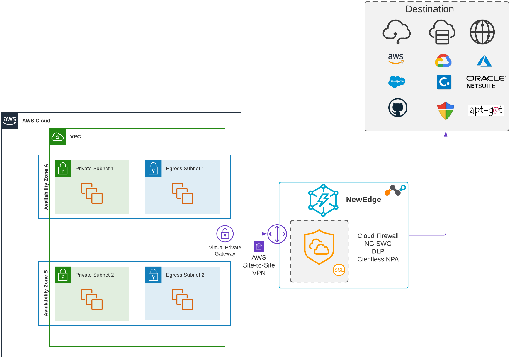
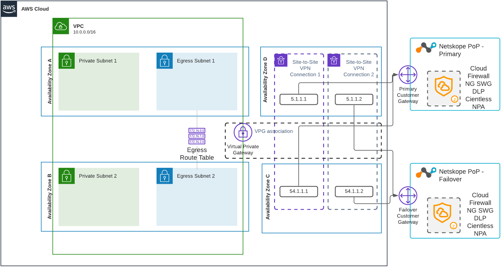

Netskope IPSec with Amazon Web Services
The guides below illustrate how to configure Netskope IPSec tunnels with your AWS environment for egress traffic filtering and monitoring. This integration provides unmatched visibility and real-time data and threat protection for the traffic leaving your AWS environment. Steering your AWS egress traffic to the Netskope cloud allows you to apply full capabilities of the Netskope platform, including cloud network firewall, web content filtering, data leakage and threat protection, third-party risk protection, etc.
You can integrate your AWS environment with Netskope with the following methods:
You can establish IPSec VPN tunnels with AWS Site-to-Site VPN between your AWS virtual private gateway, which is associated with a single Amazon Virtual Private Cloud (VPC) and Netskope Points of Presence (POPs). You must repeat this implementation for each Amazon VPC from which you’d like to steer traffic to the Netskope cloud. With this option, you can stream up to 250 Mbps of bandwidth to Netskope from a single VPC.
You can establish IPSec VPN tunnels with AWS Site-to-Site VPN between your AWS Transit Gateway. This will allow you to use the same Site-to-Site VPN connection to Netskope for multiple VPCs. However, the aggregated bandwidth for the egress traffic from these VPCs are limited by 250 Mbps. You also can split your VPCs connected to the AWS Transit Gateway into a number of groups and manage traffic steering to Netskope for each group separately. In this case, you can stream up to 250 Mbps of bandwidth to the Netskope cloud for each VPC group.
The following diagram illustrates a high-level view of steering your egress traffic to the Netskope cloud using an AWS virtual private gateway:
|  |
The following diagram illustrates a high-level view of steering your egress traffic to the Netskope cloud in a centralized manner using an AWS Transit Gateway:
The guides below show you how to establish an AWS Site-to-Site VPN IPSec tunnel between an AWS virtual private gateway that's associated with a VPC or AWS Transit Gateway on one side and a Netskope POP on another, as well as how to forward the egress traffic of your AWS application services to the Netskope UI. With this solution, the AWS VPC and Transit Gateway route tables steer traffic to the Netskope cloud. You can either send all egress traffic, including non-web application traffic, to the Netskope cloud or use explicit proxy over IPSec tunnels, which uses PAC files on your users devices to direct traffic to the Netskope explicit proxy at 163.116.128.80:8080. However, DNS traffic is the only exception. By default, the Amazon Route 53 Resolver in the VPC serves DNS traffic by default. You also can control DNS traffic using the DHCP options in your VPC.
In this high-availability integration, only one tunnel is carrying traffic at the specific point of time. If the tunnel goes down, AWS will automatically direct traffic to one of the other tunnels. It’s not possible to control which tunnel is carrying your egress traffic. And if the tunnel that was previously down recovers, traffic won't fall back to the original one.
The following diagram illustrates the high-availability architecture for a single VPC integration:
|  |
The following diagram illustrates the high-availability architecture for an AWS Transit Gateway integration: